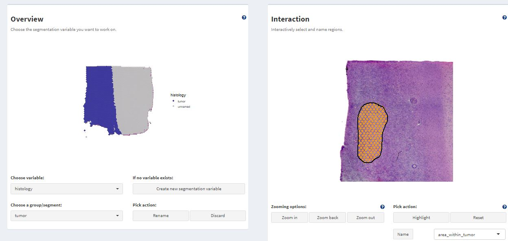

Spatial Segmentation
spata-v2-spatial-segmentation.Rmd2. Introduction & overview
Spatial transcriptomic samples come along with an underlying
histology image. To integrate the histological classification of the
area a specific barcode-spot covers the sample can be manually segmented
with SPATA2.
As an example we are using a spatial transcriptomic sample of a central nervous system malignancy that features three different, adjacent histological areas: Tumor, a transition zone as well as infiltrated cortex.
library(SPATA2)
library(SPATAData)
library(tidyverse)
object_t269 <- downloadSpataObject(sample_name = "269_T")
# load example segmentations
data("spatial_segmentations")
object_t269 <-
addFeatures(
object = object_t269,
feature_df = spatial_segmentations[["269_T"]],
overwrite = TRUE
)
# plot results
plotImageGgplot(object = object_t269) +
ggpLayerFrameByCoords(object = object_t269) +
ggpLayerThemeCoords()
plotSurface(object = object_t269, color_by = "histology")

Fig.1 Example sample T269.
The spatial segmentation based on histology is stored in grouping variable ‘histology’ how to create these histology based grouping variables is explained in this tutorial.
3. How spatial segmentation is stored
Grouping variables in transcriptomic studies are usually created by
cluster algorithms and are stored in form of factors in the feature
data.frame (or meta data.frame in case of Seurat objects).
As spatial segmentation is a grouping variable, too, it is stored there
as well.
getFeatureDf(object = object_t269) %>%
select(barcodes, where(is.factor))## # A tibble: 3,213 x 3
## barcodes seurat_clusters histology
## <chr> <fct> <fct>
## 1 AAACAAGTATCTCCCA-1 2 infiltrated
## 2 AAACACCAATAACTGC-1 0 tumor
## 3 AAACAGAGCGACTCCT-1 5 infiltrated
## 4 AAACATTTCCCGGATT-1 5 infiltrated
## 5 AAACCCGAACGAAATC-1 2 infiltrated
## 6 AAACCGGGTAGGTACC-1 7 tumor
## 7 AAACCGTTCGTCCAGG-1 0 tumor
## 8 AAACCTAAGCAGCCGG-1 1 infiltrated
## 9 AAACCTCATGAAGTTG-1 7 tumor
## 10 AAACGAGACGGTTGAT-1 1 infiltrated
## # i 3,203 more rows4. How the sample can be segmented
The interactive segmentation can be done with the function
createSpatialSegmentation(). This function gives access to
an interface in which the respective segments/areas of the sample can be
encircled and labeled such that, eventually, all barcode-spots are
labeled.
# discard the one added above, to create new one
object_t269 <- discardFeatures(object = object_t269, feature_names = "histology")
object_t269 <- createSpatialSegmentation(object_t269)Fig.2 The whole interface of createSpatialSegmentation().
Fig.3 No segmentation variable exists.
At first, there is no plot displayed on the left. This is because there is currently no segmentation variable in the feature data.frame that can be worked on.
3.1 Create new segmentation variables
To create a new segmentation variable click on ‘Create new segmentation variable’. You are then prompted to enter the name that you want to give the new variable. Here, we simply call it histology.
Fig.4 Enter segmentation name.
After clicking on Add segmentation variable a new variable is created in the feature data.frame and all of it’s values are ‘unnamed’. This is the default, has we haven’t segmented anything yet.
Fig.5 New segmentation variable ‘histology’ has been created.
3.2 Work on segmentation variables
Working on segmentation variables means to consecutively label all barcode-spots depending on the histological area they cover. To achieve this, encircle the areas that you want to label on the Interaction-plot. Start drawing by double clicking on the plot or with the shortcut on your keyboard d. If you are drawing the plot tells you.
Fig.6 Drawing mode - On.
By double-clicking again you leave the drawing mode. This can be used to zoom in or out to reorientate. If you double-click again the endpoint of the line drawn will connect to the position of your cursor and you can continue drawing. Encircle the area till start and endpoint of the line are close enough to be connected such that the circle closes. To close the circle click on ‘Highlight’. This highlights the barcode-spots that are encircled this way.
Fig.7 Area encircled.
Highlighted barcode-spots.
After highlighting the barcode-spots the name that you want to label them with can be entered below the ‘Highlight’-button. Click on ‘Name’ to save the results. The results should be immediately displayed in the plot on the left.
Fig.8 Label is stored in the grouping variable.
This can be done over and over again till you are satisfied. Note that the label you gave a barcode-spot is overwritten if you include it again in another area.
(The example below simply visualizes the concept of segmenting an area that is located inside another one. As there is nothing to actually label on the image the results were not saved in the output segmentation.)
Fig.9 & 10 Encircle an area within an area.
If you want to encircle an area within an area you must label the bigger area first and then go into the details as the last label is the one that stays.
plotSurface(object = object_t269, color_by = "histology", pt_clrp = "npg")
Fig.11 The resulting grouping variable on the surface.
4. Working with segmentation variables
Segmentation variables can be used like any other grouping variable
and are usually referred to via the arguments
grouping_variable, grouping_variables or
across or both.
# names of grouping variables
getGroupingOptions(object = object_t269)## factor factor
## "seurat_clusters" "histology"
# names of groups within the grouping variable
getGroupNames(object = object_t269, grouping_variable = "histology")## [1] "tumor" "transition" "infiltrated"
plotSurfaceComparison(
object = object_t269,
color_by = c("B2M", "MBP"),
ncol = 1
)
plotViolinplot(
object = object_t269,
variables = c("B2M", "MBP"),
across = "histology",
ncol = 1,
clrp = "npg"
)Fig.12 Working with segmentation. Example 1.
plotBarchart(
object = object_t269,
grouping_variables = "seurat_clusters",
across = "histology",
clrp = "npg"
)
plotSurface(
object = object_t269,
color_by = "seurat_clusters",
pt_clrp = "lo"
)Fig.13 Working with segmentation. Example 2.
Differential expression analysis based on histology becomes possible, too, this way.
# run DEA based on histology
object_t269 <- runDEA(object = object_t269, across = "histology")
plotDeaVolcano(
object = object_t269,
across = "histology",
use_pseudolog = TRUE
)Fig.14 Volcano plot displays DE-results based on histology.
plotSurfaceComparison(
object = object_t269,
color_by = c("B2M", "MBP", "SNAP25"),
nrow = 1
)Fig.15 Example surface plots.